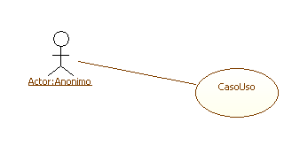
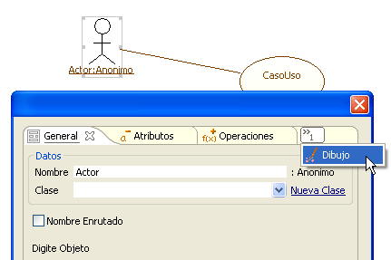
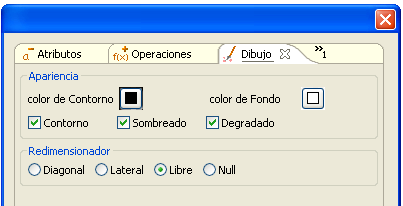
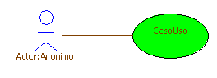
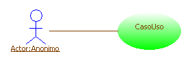
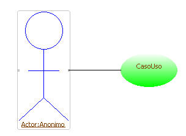
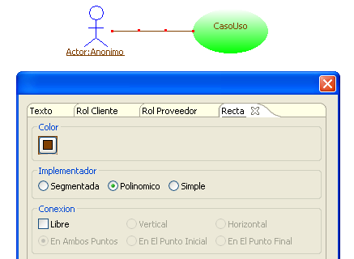
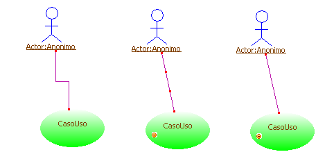
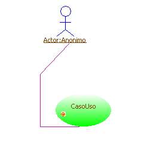

|
Personalización de Diagramas |
|
Una de las características principales de Coloso es su capacidad de integrar un entorno formal de diseño y desarrollo, con un entorno artístico de trabajo. La ayuda de UML + a pesar de haber sido realizada con las características gráficas por defecto de los componentes, presenta en esta sección la manera de personalizar los diagramas. Los diagramas de UML+ además de ser acordes con el estandar, pemiten agregar colores y formas diferentes a los elementos, con el fin de expresar necesidades estéticas o de codificación visual. Para personalizar los elementos de UML+, la pestaña Dibujo es agregada a las ventanas de creación y propiedades de los elementos del diagrama. En esta imagen se muestra la apariencia por defecto en un diagrama de Casos de Uso  FIgura 1. Caso de uso por defecto Al hacer click derecho se puede observar la especificación del artefacto. En la ultima pestaña de ésta, como se muestra en la Figura 2, se encuentran las propiedades de Dibujo (y en general en la última pestaña de cualquier artefacto).  Figura 2. Eligiendo propiedades de dibujo La configuración varía de acuerdo al tipo de elemento, aunque los parámetros usuales son los siguientes
 Figura 3. Elementos para personalizar diagrama  FIgura 4. Utilizando color de relleno Las otras opciones indican si el Contorno se debe dibujar o no, el Sombreado de la figura y el Degradado del fondo. En la siguiente imagen se observa el Caso de Uso sin el Contorno activo y con un degradado en el fondo.  Figura 5. Utilizando color de relleno degradado Por ultimo el Redimensionador controla en que sentido el artefacto se puede deformar. Por defecto es libre, es decir se puede cambiar de tamaño en cualquier sentido. Las otras opciones son permitir solo Diagonal, lateral o no permitir ningún cambio de tamaño o forma (null). Para el caso de la Figura 6 se ha redimensionado al actor y se ha limitado a lateral, como se puede ver, los únicos puntos para hacerlo se encuentran a los lados de la figura. Figura 6. Redimensionando elementos Al igual que los otros elementos es posible personalizar los conectores. En este caso uniendo el Actor y el Caso de Uso existe una relación de asociación. Es posible alterar el color, la forma de la línea (Implementador) y la conexión, es decir la forma en que se adherirá la relación a los elementos.  Figura 7. Eligiendo forma de línea En la Figura 8 se muestran los tres tipos de implementador, de izquierda a derecha segmentada, polinómico y simple. Hay que recalcar que en polinómico a diferencia de simple, existen puntos intermedios que se pueden ajustar manualmente.  Figura 8. Diferentes estilos de línea Por último, los tipos de conexión son dos: realmente libre, que permite al usuario ajustar los puntos de conexión y no-libre, que hace que la herramienta los ajuste automáticamente a medida que los artefactos se mueven. La conexion libre se puede restringir al movimiento horizontal, vertical, en ambos puntos de conexión, en el inicial o en el final.La Figura 9 muestra un conector polinómico con una conexión libre en ambos puntos.  Figura 9. Conector polinómico |